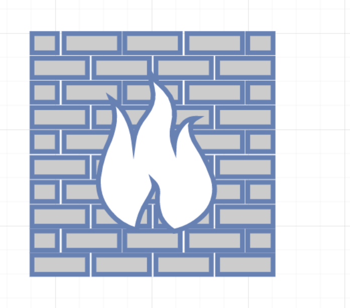
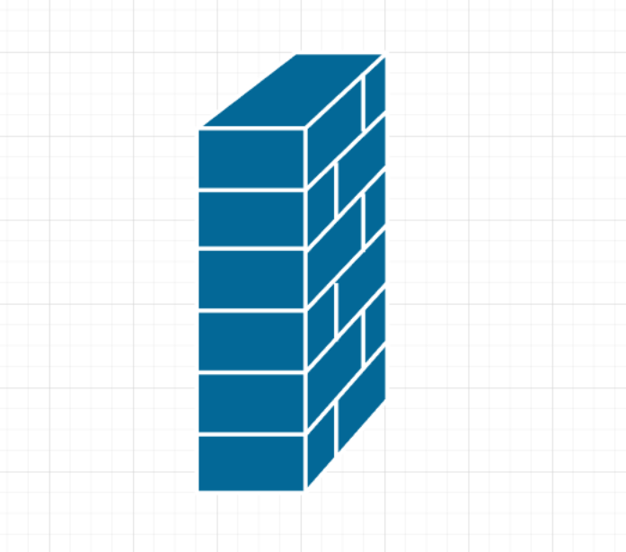
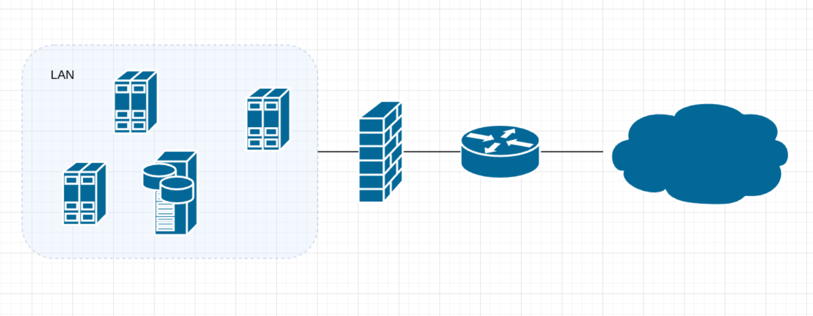
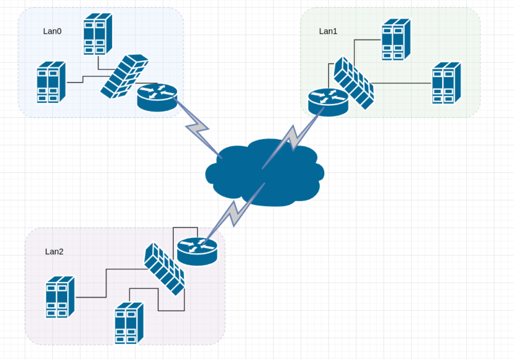
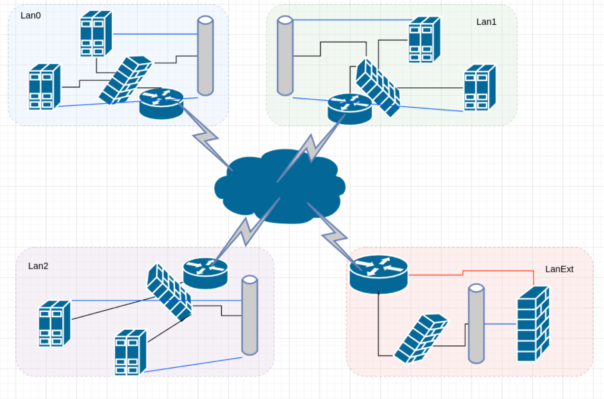
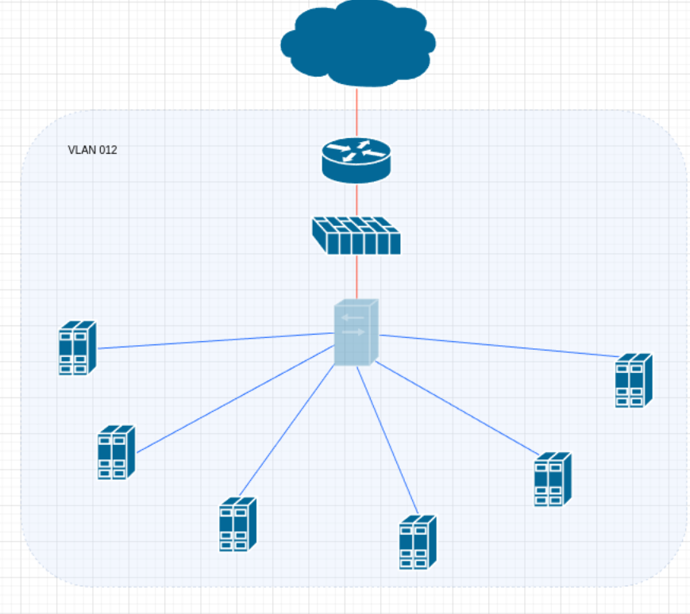
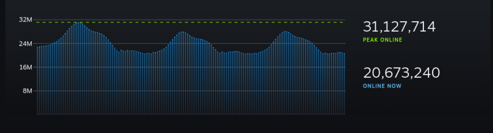

Veljko Petrović
Novembar, 2022
Upotrebe tehnologije za ostvarnje ciljeva
Virtuelne privatne mreže za upotrebu u oblaku






Podaci u oblaku
Upravljanje skaliranjem CC instalacija
aws autoscaling create-auto-scaling-group --auto-scaling-group-name moja-grupa \
--launch-template LaunchTemplateName=moj-sablon,Version='2' \
--vpc-zone-identifier "subnet-5ea0c127,subnet-6194ea3b,subnet-c934b782" \
--max-size 5 --min-size 1aws autoscaling put-scaling-policy --policy-name prosto-skaliranje-na-gore \
--auto-scaling-group-name moja-grupa --scaling-adjustment 30 \
--adjustment-type PercentChangeInCapacityaws autoscaling put-scaling-policy --policy-name prosto-skaliranje-na-dole \
--auto-scaling-group-name moja-grupa --scaling-adjustment -1 \
--adjustment-type ChangeInCapacity --cooldown 180aws cloudwatch put-metric-alarm --alarm-name prosto-skaliranje-na-gore-alarm \
--metric-name CPUUtilization --namespace AWS/EC2 --statistic Average \
--period 120 --evaluation-periods 2 --threshold 60 \
--comparison-operator GreaterThanOrEqualToThreshold \
--dimensions "Name=AutoScalingGroupName,Value=moja-grupa" \
--alarm-actions arn:aws:autoscaling:region:123456789012:scalingPolicy:ac542982-cbeb-4294-891c-a5a941dfa787:autoScalingGroupName/moja-grupa:policyName/prosto-skaliranje-na-gore$ARN da radi efikasnosti notacijeaws cloudwatch put-metric-alarm --alarm-name prosto-skaliranje-na-dole-alarm \
--metric-name CPUUtilization --namespace AWS/EC2 --statistic Average \
--period 120 --evaluation-periods 2 --threshold 40 \
--comparison-operator LessThanOrEqualToThreshold \
--dimensions "Name=AutoScalingGroupName,Value=moja-grupa" \
--alarm-actions $ARNaws autoscaling put-scaling-policy \
--auto-scaling-group-name moja-grupa \
--policy-name korak-skaliranje-na-gore \
--policy-type StepScaling \
--adjustment-type PercentChangeInCapacity \
--metric-aggregation-type Average \
--step-adjustments MetricIntervalLowerBound=0.0,MetricIntervalUpperBound=15.0,ScalingAdjustment=10 \
MetricIntervalLowerBound=15.0,MetricIntervalUpperBound=25.0,ScalingAdjustment=20 \
MetricIntervalLowerBound=25.0,ScalingAdjustment=30 \
--min-adjustment-magnitude 1aws autoscaling put-scaling-policy \
--auto-scaling-group-name moja-grupa \
--policy-name korak-skaliranje-na-dole \
--policy-type StepScaling \
--adjustment-type ChangeInCapacity \
--step-adjustments MetricIntervalUpperBound=0.0,ScalingAdjustment=-2ASGAverageCPUUtilization — Prosečna potrošnja procesora za celu grupu.ASGAverageNetworkIn — Prosečni broj bajtova koji prima jedna instanca na svim mrežnim interfejsima.ASGAverageNetworkOut — Prosečni broj bajtova koji šalje jedna instanca na svim mrežnim interfejsima.ALBRequestCountPerTarget — Prosečan broj balansiranih (više o tome kasnije) zahteva po meti.{
"CustomizedMetricSpecification": {
"Metrics": [
{
"Label": "Broj poruka koje čekaju na obradu",
"Id": "m1",
"MetricStat": {
"Metric": {
"MetricName": "ApproximateNumberOfMessagesVisible",
"Namespace": "AWS/SQS",
"Dimensions": [
{
"Name": "QueueName",
"Value": "my-queue"
}
]
},
"Stat": "Sum"
},
"ReturnData": false
},
{
"Label": "Koliko imamo instanci koje rade",
"Id": "m2",
"MetricStat": {
"Metric": {
"MetricName": "GroupInServiceInstances",
"Namespace": "AWS/AutoScaling",
"Dimensions": [
{
"Name": "AutoScalingGroupName",
"Value": "moja-grupa"
}
]
},
"Stat": "Average"
},
"ReturnData": false
},
{
"Label": "Proračun poruka koje čekaju po instanci",
"Id": "e1",
"Expression": "m1 / m2",
"ReturnData": true
}
]
},
"TargetValue": 100
}aws autoscaling put-scaling-policy --policy-name cpu40-upravljanje-metom \
--auto-scaling-group-name moja-grupa --policy-type TargetTrackingScaling \
--target-tracking-configuration file://config.jsonconfig.json je naravno fajl koji smo napravili sa konfiguracijom{
"PolicyARN": "arn:aws:autoscaling:region:account-id:scalingPolicy:228f02c2-c665-4bfd-aaac-8b04080bea3c:autoScalingGroupName/moja-grupa:policyName/cpu40-upravljanje-metom",
"Alarms": [
{
"AlarmARN": "arn:aws:cloudwatch:region:account-id:alarm:TargetTracking-moja-grupa-AlarmHigh-fc0e4183-23ac-497e-9992-691c9980c38e",
"AlarmName": "TargetTracking-moja-grupa-AlarmHigh-fc0e4183-23ac-497e-9992-691c9980c38e"
},
{
"AlarmARN": "arn:aws:cloudwatch:region:account-id:alarm:TargetTracking-moja-grupa-AlarmLow-61a39305-ed0c-47af-bd9e-471a352ee1a2",
"AlarmName": "TargetTracking-moja-grupa-AlarmLow-61a39305-ed0c-47af-bd9e-471a352ee1a2"
}
]
}
aws autoscaling put-scaling-policy --policy-name cpu40-informativna-predikcija \
--auto-scaling-group-name moja-grupa --policy-type PredictiveScaling \
--predictive-scaling-configuration file://config.jsonconfig.jsonconfig.json baš kao i onaj koji smo koristili za upravljanje vođeno metomconfig.json tako da ubacimo da je vrednost ključa “Mode” ravna “ForecastAndScale”config.jsonconfig.jsonIncreaseMaxCapacity dozvoljava sistemu za prediktivno upravljanje da privremeno poveća maksimalni kapacitet na onoliko koliko je predviđeno da će biti potrebno.MaxCapacityBuffer dozvoljava sistemu da alocira nešto više resursa od predviđenih kao bezbednosni bafer